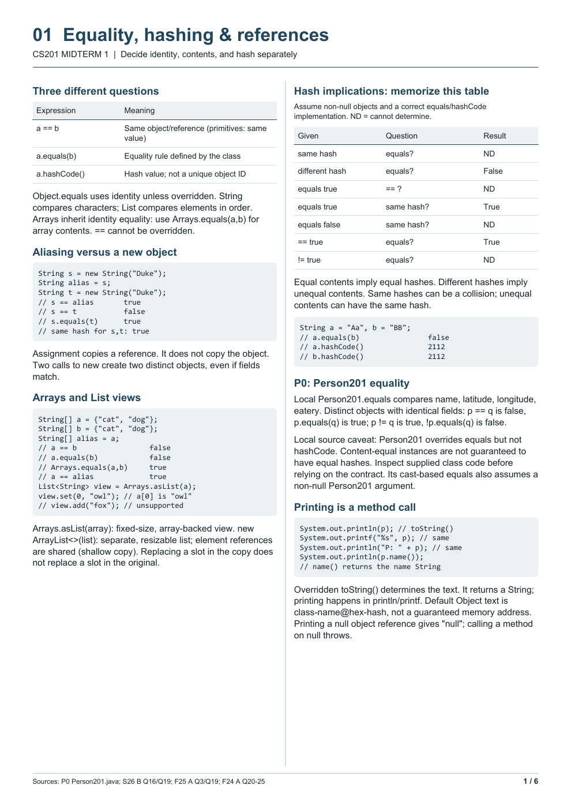
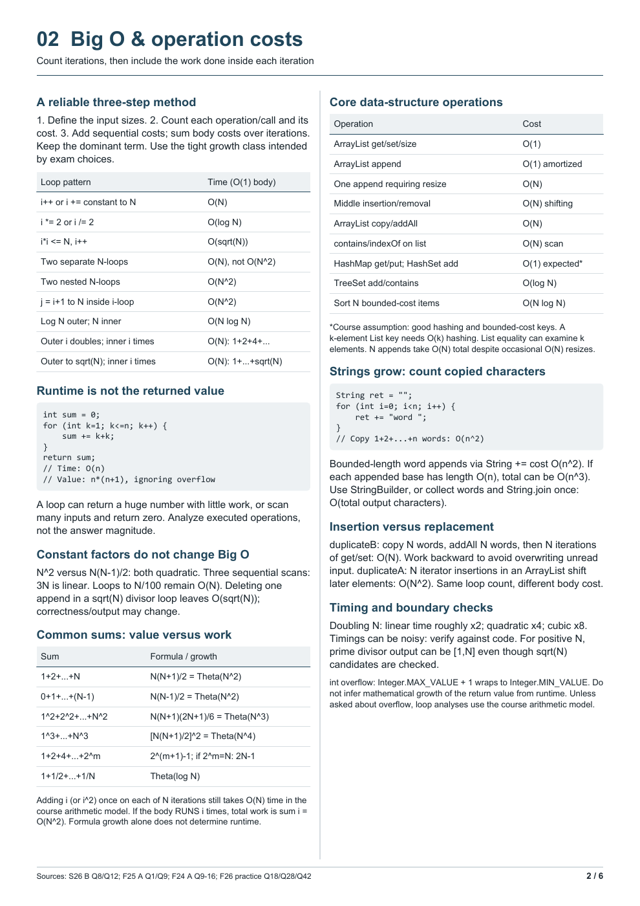
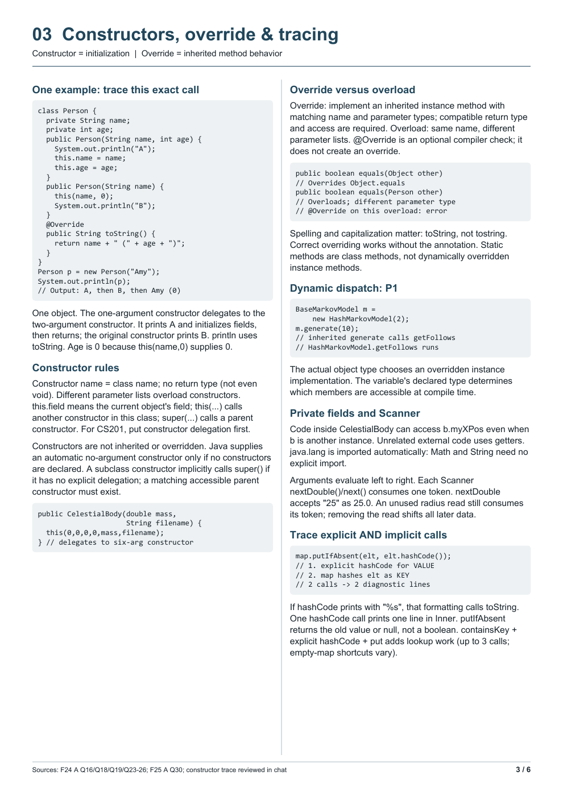
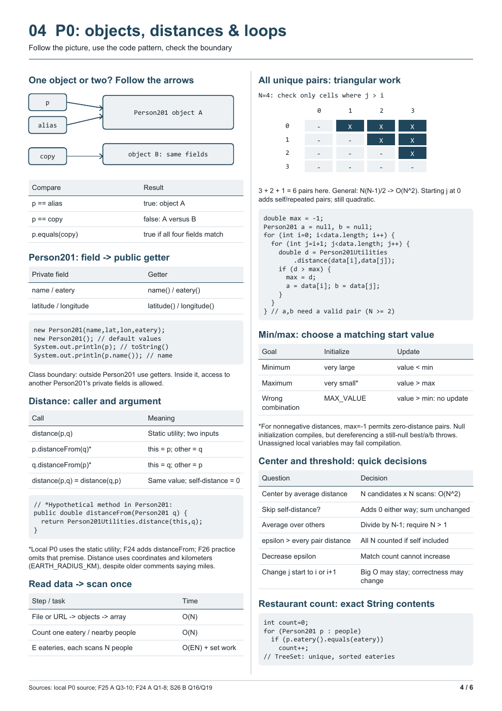
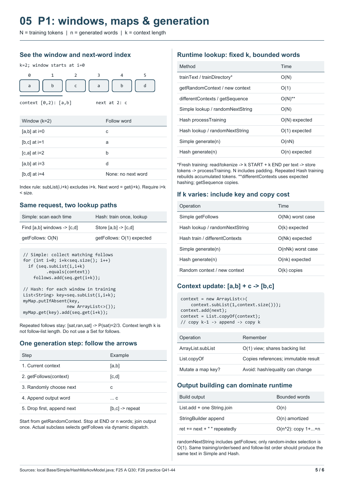
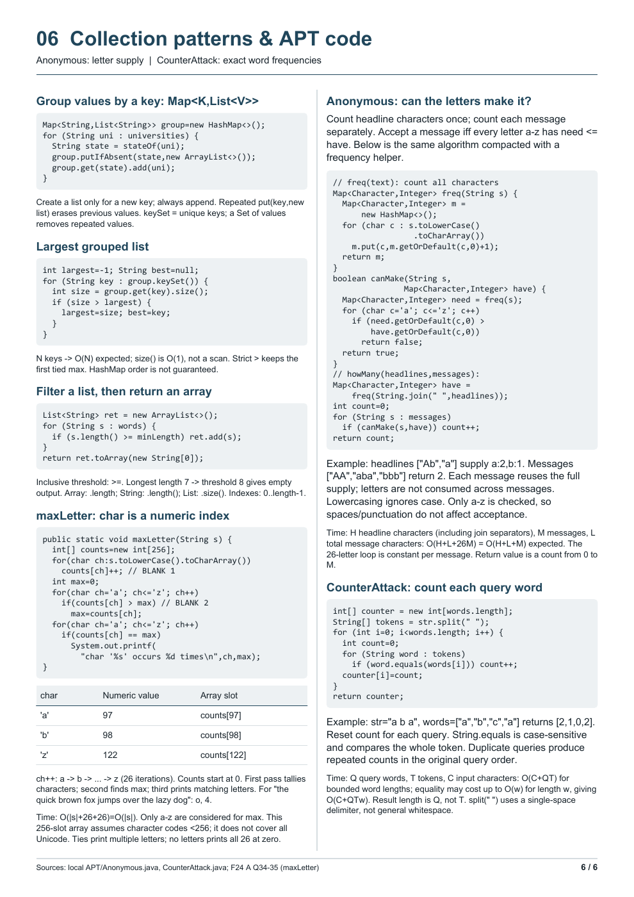

Real study example / CS201 Midterm 1
A guide built around
the student's mistakes.
The original six-page English PDF: course-specific code, visual explanations, and the details the student asked to revisit.
This PDF is preserved byte-for-byte. It is a personal reference guide from the workflow that inspired the skill. Reference-sheet rules belong to each course; check yours before using any guide during an exam.
Personalization you can see.
The review used supplied class code, past-paper formats, and the student's reported missed questions. Follow-up requests changed the guide: add a constructor trace, make the P0/P1 pages more visual, include runtime sums, and replace checklist space with the relevant Anonymous and CounterAttack APT patterns.
| Student evidence or request | What appears in the guide |
|---|---|
| Constructor delegation and override/overload needed another explanation. | Page 3 traces the delegated call, printed order, field initialization, and signature rules. |
| Identity, content equality and hashing were recurring review targets. | Pages 1 and 4 combine implication tables with reference arrows. |
| The P0/P1 sections felt too text-heavy. | Pages 4 and 5 use a pair grid and token-window diagram alongside code. |
| The student requested relevant APT patterns and maxLetter tracing. | Page 6 contains character indexing, letter frequencies, and exact query-word counts. |
Browse all six original pages.
Select a page to open its full preview. Download the PDF for the original print layout.












Try the same request.
Use my course notes, supplied code, and saved learning record.
Make a six-page English review guide for this midterm.
Prioritize my recurring misconceptions without dropping core coverage.
For constructors, show one exact trace. For references and Markov
windows, use diagrams beside the code. Keep it readable when printed.
Follow my course's actual reference-sheet rules.Read the original English guide draft · See how the STA199 learning record worked · All real examples